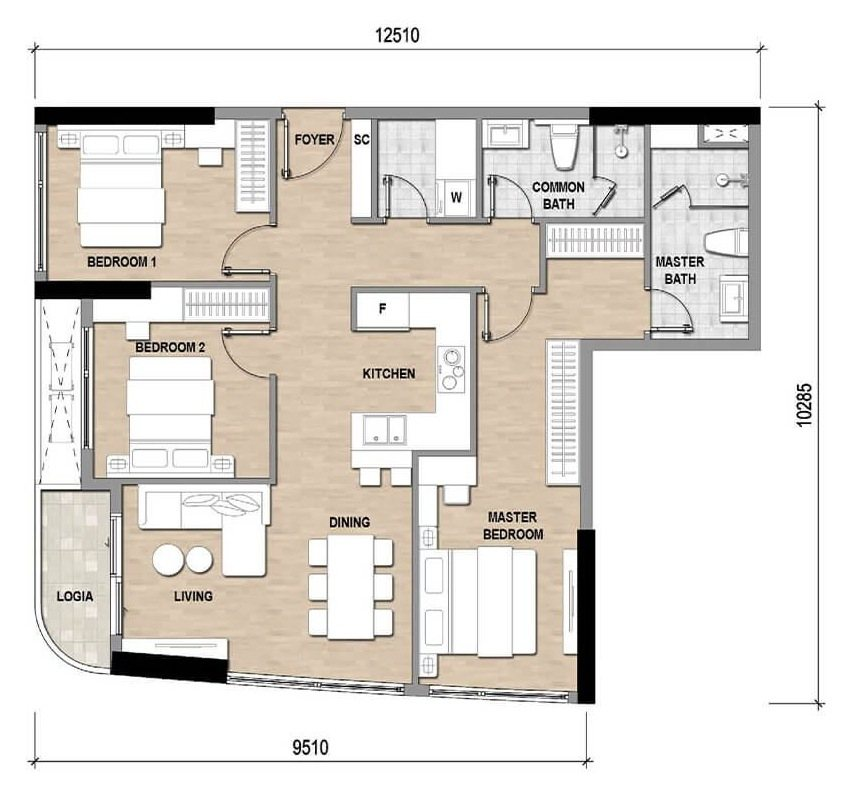
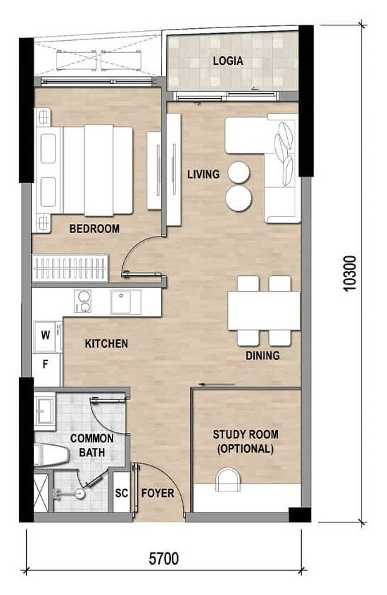
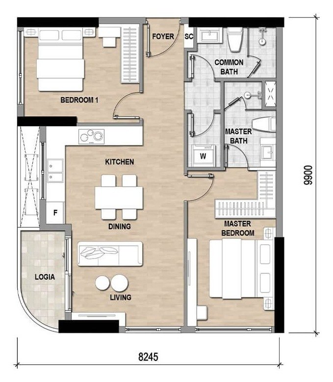
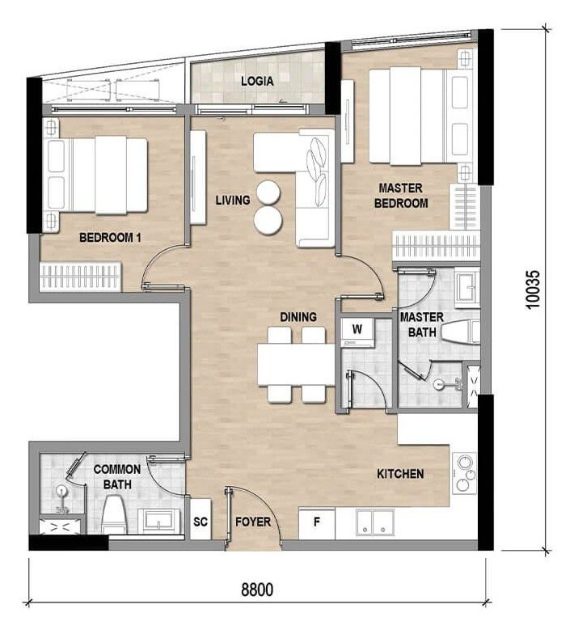
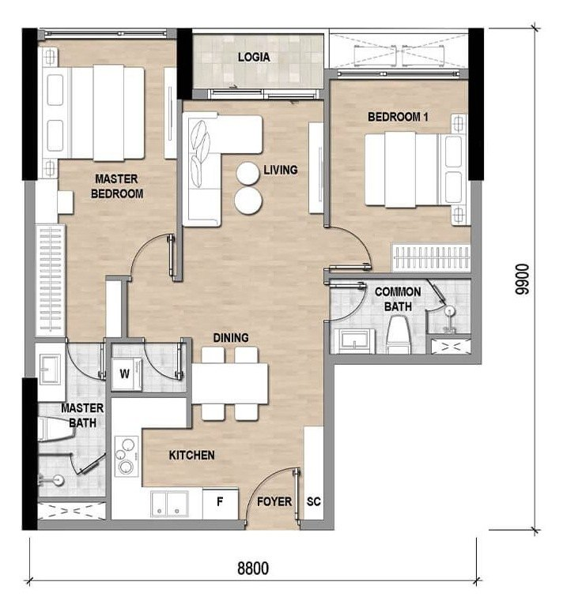
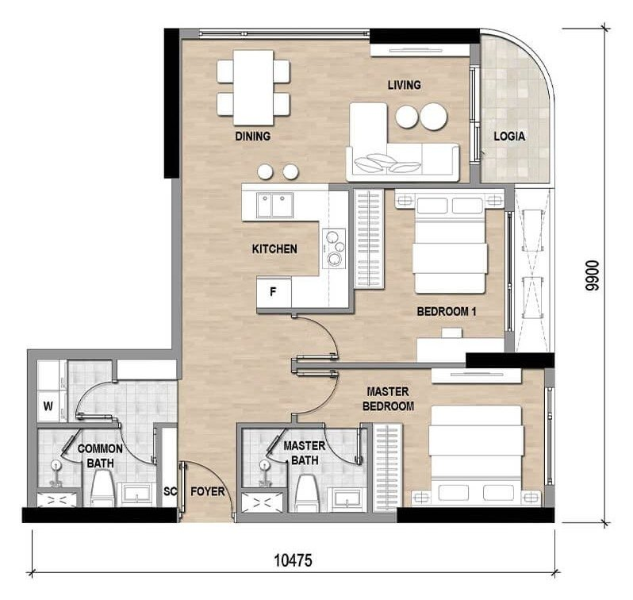
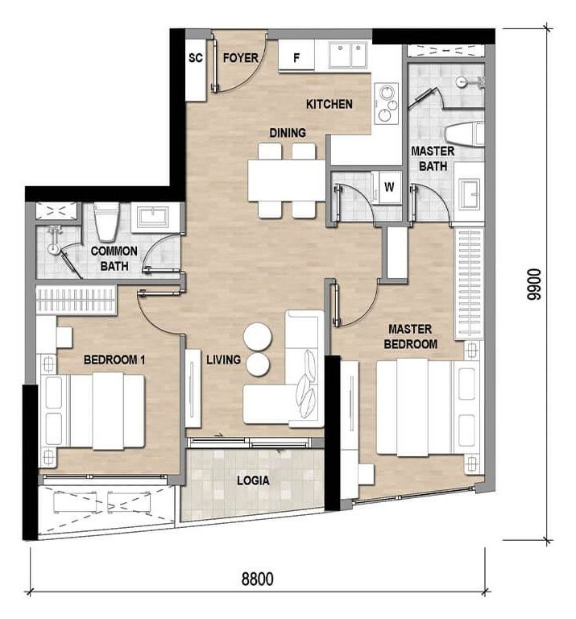
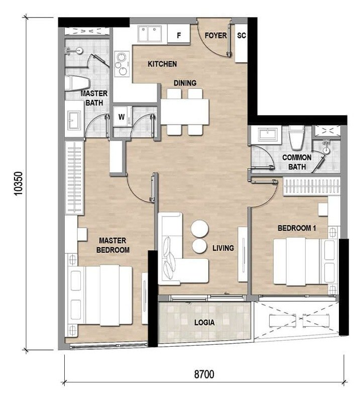
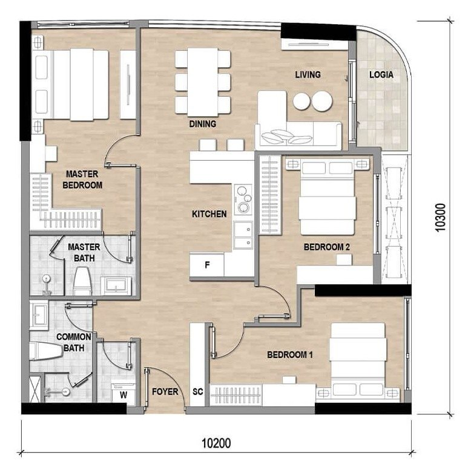
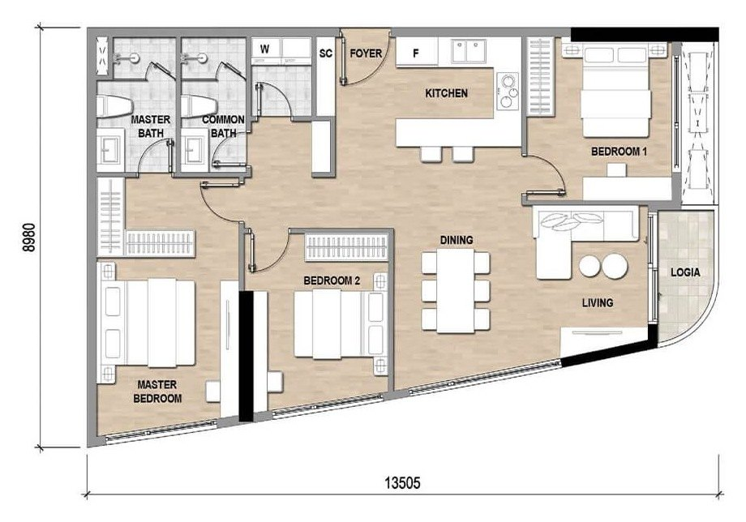

The 9 Stellars (Alpha Residence, Thủ Đức): thông tin dự án và 14 mặt bằng căn hộ

1. Tóm tắt nhanh
Thủ Đức
đã thu thập
khác nhau rõ rệt
The 9 Stellars là khu đô thị của Sơn Kim Land tại TP. Thủ Đức; Alpha Residence là một trong các phân khu căn hộ cao tầng. Bài này tổng hợp 14 mặt bằng đã thu thập.
| Hạng mục | Thông tin |
|---|---|
| Tên dự án | The 9 Stellars (Alpha Residence) |
| Chủ đầu tư | Sơn Kim Land |
| Phân khu | Alpha Residence (khoảng 500 căn, tháp 38 tầng và 3 tầng hầm theo một nguồn); phân khu Alta Height liền kề |
| Phân khúc | High-end theo CBRE (quý II/2026) |
| Giá tham khảo | Căn hộ Alta Height khoảng 59–77 triệu/m² |
| Giá bán chính thức | Chưa có bảng giá chính thức trong bài; xem mục 5 |
2. Vị trí
Dự án nằm tại Thủ Đức. Bài chỉ nêu thông tin công bố, không đánh giá vị trí.
3. Sản phẩm
Bảng dưới đây liệt kê toàn bộ mặt bằng đã thu thập; những mẫu có diện tích gần như trùng nhau được ghi chú “cùng mặt bằng”, và phần hình chỉ đặt các mặt bằng khác nhau. Diện tích có thể khác nhau tùy nguồn (tim tường hay thông thủy); cột trống nghĩa là tài liệu không công bố.
| Loại / mã | Số PN | Tim tường (m²) | Thông thủy (m²) | Ghi chú |
|---|---|---|---|---|
| 1B-B (05.05) | 1 | 55,8 | 51,6 | |
| 1B-D (05.08) | 1 | 55,5 | 51,0 | Cùng mặt bằng với 1B-B (05.05) |
| 1B-C (05.07) | 1 | 55,2 | 51,2 | Cùng mặt bằng với 1B-B (05.05) |
| 2B-A (05.02) | 2 | 76,8 | 71,5 | |
| 2B-B (05.03) | 2 | 77,2 | 71,3 | Cùng mặt bằng với 2B-A (05.02) |
| 2B-C (05.03A) | 2 | 71,9 | 65,8 | |
| 2B-D (05.09) | 2 | 73,8 | 68,8 | |
| 2B-E (05.10) | 2 | 79,1 | 73,5 | |
| 2B-F (05.12) | 2 | 70,7 | 65,1 | |
| 2B-G (05.12A) | 2 | 75,4 | 69,7 | |
| 2B-H (05.14) | 2 | 75,9 | 69,8 | Cùng mặt bằng với 2B-G (05.12A) |
| 3B-A (05.06) | 3 | 98,0 | 91,8 | |
| 3B-B (05.11) | 3 | 99,0 | 93,5 | |
| 3B-C (05.15) | 3 | 101,8 | 95,3 |
Căn hộ 1 phòng ngủ

Căn hộ 2 phòng ngủ






Căn hộ 3 phòng ngủ


4. Tiện ích và thiết kế
Thông tin tiện ích chi tiết xem trang chính thức của dự án; bài này tập trung vào mặt bằng căn hộ.
5. Giá tham khảo (gần đúng)
| Nguồn / loại căn | Mức giá | Ghi chú |
|---|---|---|
| Alta Height (cùng khu) | khoảng 68 triệu/m² | Theo thuvienphapluat.vn |
| Giá tham khảo cũ (2022) | khoảng 58,7 triệu/m² (2.300 USD/m²) | Cafeland |
| Một tin rao Alta Height 78 m² | 76,9 triệu/m² | Giá rao |
Chưa tìm thấy giá riêng cho Alpha Residence; mức của Alta Height khoảng 59–77 triệu/m² chỉ để hình dung, phân khu Alpha có thể cao hơn.
6. Tiến độ và nguồn cung
- Chưa có thông tin chính thức trong bài: số căn từng mẫu, bảng giá hiện hành và tiến độ chi tiết; hãy hỏi chủ đầu tư.
7. Kết luận
Bài tổng hợp các mặt bằng đã công bố của The 9 Stellars (Alpha Residence) để dễ đối chiếu. Khi cân nhắc một căn cụ thể, hãy xác nhận mã căn, diện tích tim tường và thông thủy và giá hiện hành với chủ đầu tư.